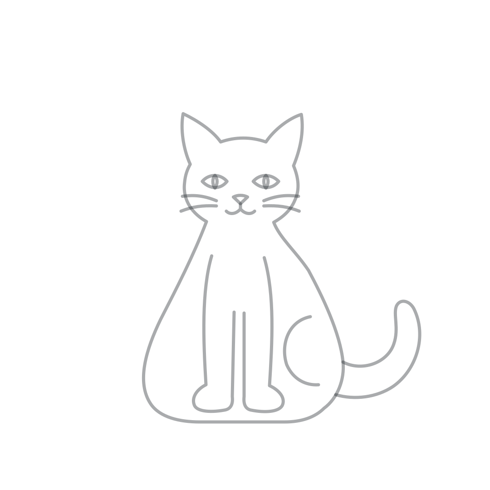
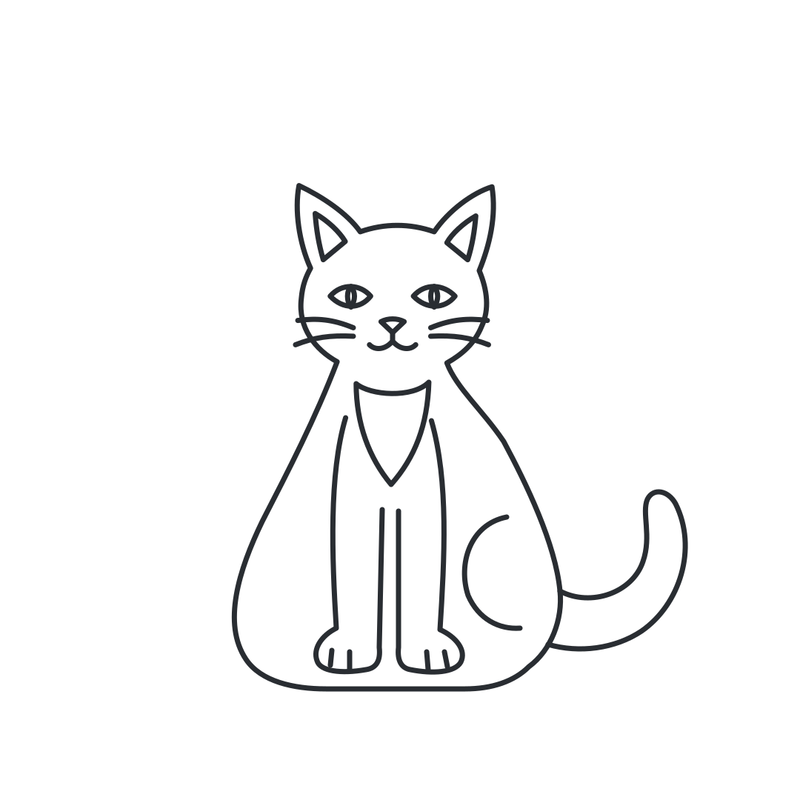

Gato: nova direção de contorno
Estudo original de anatomia e proporções mais naturais, sem fundo ou acessórios. Aprovado pelo responsável como referência visual. Integrado ao catálogo piloto como versão 2, sem substituir a arte de nenhum quadro já salvo.
Seguir contorno

Guia a 40%, menos linhas internas.
Colorir

Contorno escuro, regiões adicionais nas orelhas e peito.
Revisar principalmente: proporção cabeça/corpo, postura e patas, expressão e se esse estilo é o desejado. Integração realizada como nova versão, preservando os assets V1. Revisar os outros cinco pares.